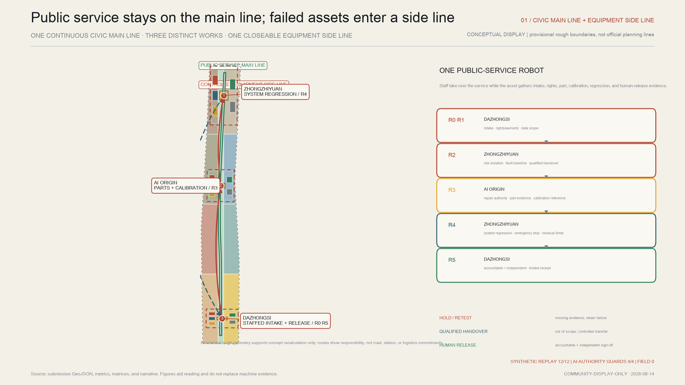
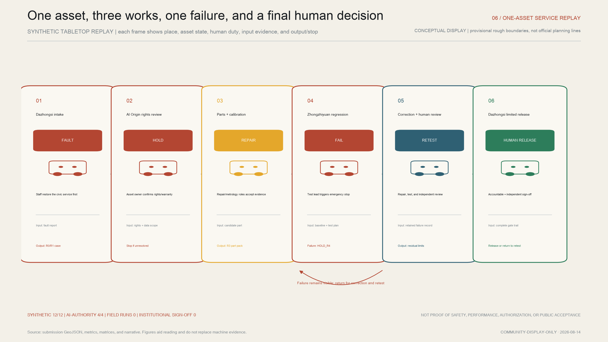
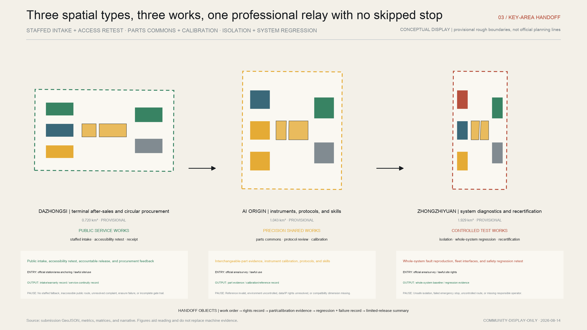
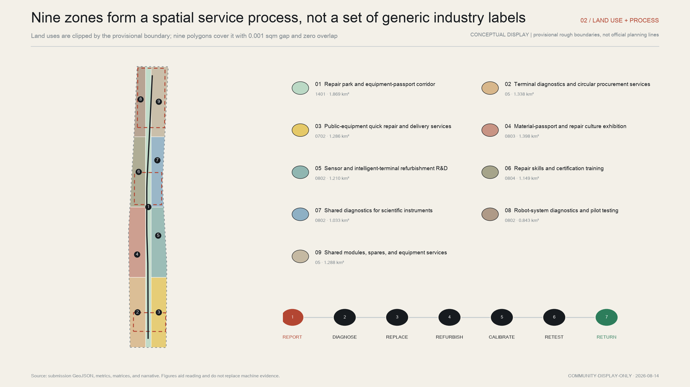
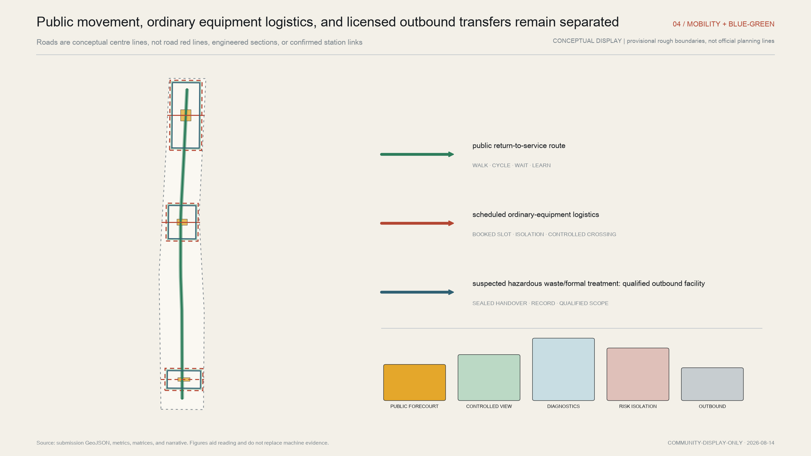
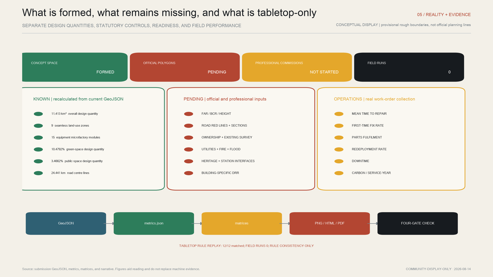

Overall urban structure
The civic main line stays open while a failed asset moves between three return-to-service works on a controlled side line.
Industrial infrastructure that returns urban AI equipment to accountable service
CONCEPTUAL DISPLAY | provisional rough boundaries, not official planning lines
Staffed, paper, telephone, and accessible equivalents keep the civic main line open. The failed robot enters a closeable side line: Dazhongsi intake, part and calibration evidence at AI Origin, a failed whole-system test and retest at Zhongzhiyuan, and only then a limited receipt signed by accountable and independent people.


The civic main line stays open while a failed asset moves between three return-to-service works on a controlled side line.
Dazhongsi faces the public, AI Origin handles parts and calibration, and Zhongzhiyuan handles system regression; none releases alone.

Nine zones organize public service, precision work, and controlled back-of-house functions as a reversible, phased spatial process.

Public movement, ordinary equipment, and qualified outbound transfer are separated; the accessible main route does not detour around a failed asset.

Concept space is formed; official polygons are pending; professional commissions are not started; field runs and institutional sign-off remain zero.

Task coverage: 23 announcement and Agent requirements are mapped in compliance_matrix.json; all 15 required design-depth items are complete.
Sources: 27 package records, nine GeoJSON files, R0–R5 contracts, an AI–human authority matrix, a twelve-scenario responsibility matrix, and bilingual narrative. Tabletop replay 12/12; AI-authority guards 4/4; field runs 0.
Assumptions: the overall and three key-area boundaries remain provisional rough geometry. FAR, height, statutory coverage, road red lines, ownership, utilities, fire, flood, heritage, and station relationships await official data and professional review.